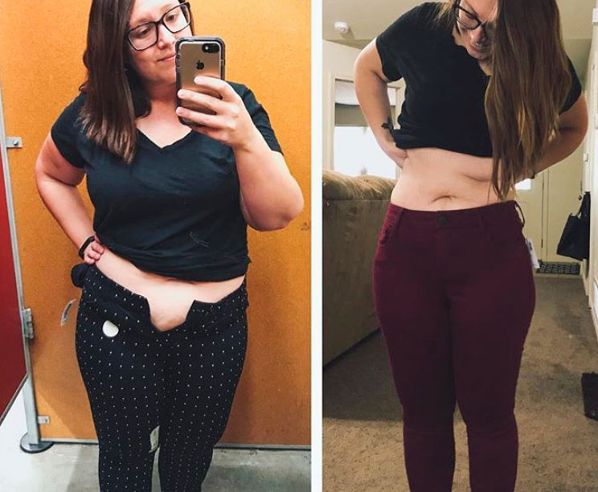

EXKLUSIV: Neue Kapseln übertreffen alles Bekannte und sind in Deutschland äußerst beliebt. Die zweifache Mutter aus Mannheim hat das Produkt überprüft und 20 kg abgenommen – in nur 4 Wochen!
Wir haben von Andrea einen Bericht mit sehr interessanten etails zu dieser sensationellenAbnehmgeschichte erhalten. Im Sinne unserer Leser haben wir alle Details der neuen Diät mit überprüft und geschaut, ob es wirklich so effektiv ist wie behauptet wird.
Unsere Journalistin Monica
hat sich eine ungewöhnliche Abnehmmethode angeschaut, die sich in unserem Land immer größerer Beliebtheit erfreut.
(Mutter & Gesundheit).
In den letzten drei Monaten haben unsere Leser wie verrückt alle Neuigkeiten zu einemNaturheilmittel namens aufgesaugt. Dieses Mittel half bereits tausenden Frauen auf der ganzen Weltbeim Abnehmen. Dieses revolutionäre Mittel trägt den Namen und wurde bereits in vielenSendungen thematisiert. Es stellte sich heraus, dass 100% natürlich und zugleich absolut erschwinglich ist.
Selbst viele ausländische Prominente wie Vicky Pattison, Jessica Simpson, Ricky Gervais undJonah Hill konnten nur mit diesen Kapseln abnehmen. Ihre fantastische Wirkung wurdeklinisch nachgewiesen. Sie verbrennen nicht nur schnell das gesamte im Körper gespeicherte Fett,sondern reinigen auch den Körper von Giftstoffen, verjüngen ihn und beschleunigen denStoffwechsel erheblich. All dies wurde entwickelt, um zu verhindern, dass der Körper in ZukunftFettablagerungen ansammelt.
Wie in unseren Untersuchungen zu verschiedenen Methoden zur Gewichtsreduktion häufigfestgestellt wird, ist dieser Prozess im Allgemeinen eine sehr schwierige Aufgabe und dieErgebnisse sind häufig geringfügig oder nur vorübergehend.
Nach umfangreichen Recherchen und Interviews mit Menschen, die ausprobiert haben, stellten wir fest, dass dies wirklich ein Durchbruch ist.Lesen Sie weiter und finden Sie heraus, warum wir von dieser Methode so begeistert sind.
Neueste Bewertungen
Viele können nicht abnehmen, weil bestimmte Mineralstoffe in der Ernährung fehlen!
Im Gegensatz zu modernen Ergänzungsmitteln bewirkt wahre Wunder beim Abnehmen und in der Korrektur der Figur. Die Kombinationdieses Produktes mit einer gesunden Diät kann dazu führen, dass Sie in 2 Monaten bis zu 20 kgabnehmen.
Was andere dazu sagen

All meine Freunde schwärmten von . Ich hatte seit meiner Schulzeit Probleme mit Übergewicht, sodass Sie sichvorstellen können, wie viele Jahre ich davon geträumt habe, mich gut zu fühlen und so gutauszusehen wie meine schlanken Freunde. Mir wurde empfohlen und ich habe es nicht bereut. Dank konnte ich 12 kg abnehmen. Zum ersten Mal ist meine Figur jetzt einfachperfekt. Ich liebe meinen neuen Körper!
Alexandra MüllerWeiterlesen >>>
Nach meinem 20. Geburtstag bekam ich Probleme mit Übergewicht. Von einem dünnen undgutaussehenden Mann wurde ich ein richtiger Fettsack. Dann ging ich ins Fitnessstudio und meinTrainer empfahl, viel Wasser zu trinken und zweimal täglich einzunehmen. Das Ergebnis ist einfach sensationell: 14 kgweniger in 4 Wochen. Ich bin sehr dankbar dafür!
Michael BraunsperrWeiterlesen >>>
Als dreifache Mutter muss ich mich jeden Tag auf Arbeit, Kinder und eine Million andere Dingekümmern...
Eines Tages gab mir eine gute Freundin . Ich habe in der ersten Woche wirklich angefangen abzunehmen. Einen Monatspäter konnte ich nicht glauben, dass ich meine Traumfigur erreicht hatte. Danke für alles, Das ist ein echtes Wunder!
ErikaWeiterlesen >>>

Jetzt ausprobieren!

"Hier habe ich 13 kg abgenommen", sagt Beate
kaufen
Der Grund, warum die meisten Diäten unserer Meinung nach scheitern, ist, dass sie unsere Lebensweiseunrealistisch einschränken. Einige sagen, wir müssen viel Eiweiß essen, andere betonen die Bedeutungvon Kohlenhydraten. In beiden Fällen ändern Sie Ihre Essgewohnheiten ziemlich stark.
In dieser Sonderausgabe werden wir uns ausführlich mit diesem erfolgreichen Mittel zum Abnehmenbefassen, das weder Diäten noch Sport erfordert und vor allem den Körper nicht schädigt. Wirglauben, dass dies eine echte Revolution in der Gewichtsabnahme ist.
Möglicherweise haben Sie im Fernsehen von den Kapseln gehört. Sie enthalten Himbeerketone, Bromelain, L-Carnitin, Coenzym Q10, Beta-Sitosterol.
All diese Inhaltsstoffe sollen überschüssiges Fett verbrennen und den Stoffwechsel beschleunigen.
Die am renommierten UCLA – Forschungszentrum in Los Angeles (USA) durchgeführten Studien zu haben gezeigt, dass das Mittel bei regelmäßiger Nutzung denStoffwechsel beschleunigen und die Fettverbrennung um 318% steigern kann.
Das Problem am Erfolg von sind jedoch die vielen Fälschungen auf dem Markt, die absolut nichts mit demOriginal zu tun haben.
Aber das Original hat sich immer wieder bewiesen und übertraf all unsere Erwartungen. DieAnwender von konnten ihr Gewicht deutlich reduzieren, wurden energischer und aktiver. Auch wirwaren skeptisch, als wir zum ersten Mal von diesen sensationellen Gewichtsreduktionen hörten undglaubten nicht sofort an diese Wirksamkeit.
Nachdem wir jedoch entschieden hatten, dass dieser allgemeine Trend unsere Aufmerksamkeit verdient,begannen wir, die Geschichten von Menschen zu studieren, die mit abgenommen hatten. Uns hat besonders interessiert, dass diese Menschen ihreLebensweise nicht verändert haben.

Eine unserer Leserinnen, Marie aus Plauen, hat sogar 20 kg abgenommen. Und dieses Ergebnis in nur 5 Wochen mit Kapseln. In ihrem Blog schrieb sie:
"Ich konnte nicht glauben, wie einfach es war! Ich änderte meine Gewohnheiten nicht, aber das Fettschmolz wie Butter! Ich liebe dieses Produkt! Endlich fand ich eine Methode, die wirklich funktioniert!"

Ein weiterer Kommentar von Julia
Ich wurde ausgewählt, um zu versuchen, und ich verlor sofort 10 kg. Meine Hochzeitfand 3 Monate später statt und ich hatte die perfekte Figur. Meine Bestellung wurde in nur wenigen Tagen geliefert.
Ich war von absolut begeistert, weil es in seinen klinischen Studien gute Ergebnisse erzielthat und von Forschungslabors mit strengen Anforderungen an die Produktqualität zugelassen wurde. Wiemir mitgeteilt wurde, ist dies eines der konzentriertesten und reinsten Produkte zurGewichtsreduktion auf dem Markt.
ist klinisch geprüft und
- Normalisiert die Hormonspiegel
- Reguliert den Stoffwechsel, fördert die Haut sowie die Haare und Nägel
- Fördert die bessere Aufnahme von Nährstoffen
- Reduziert den Cholesterinspiegel und reguliert die Verdauung
- Eliminiert Giftstoffe, verbrennt Fette und aktiviert die Zellregeneration.
Meine Ergebnisse: Ich habe in einem Monat 12,5 kg abgenommen und trage 3Kleidergrößen weniger. Ich bin überglücklich.
Erste Woche:
Nachdem ich die Kapseln eine Woche lang eingenommen hatte, war ich überrascht, wie schnell sie wirksam wurden. Ich wurde auch energischer und wollte fast nichts essen – zügelt den Appetit und den Heißhunger.
Ich fühlte mich großartig.
Vor allem aber habe ich in meinem Alltag nichts verändert. Am siebten Tagstieg ich auf die Waage und traute meinen Augen nicht. Ich hatte 5 kg abgenommen! Aber ich habemich davor bewahrt, zu enthusiastisch zu sein. Denn mir wurde gesagt wurde, dass man zu Beginnviel Flüssigkeit verliert. Ich beschloss zu sehen, was als nächstes mit meinem Gewicht passierenwürde.
Zweite Woche:
Nach der zweiten Woche wurde ich noch energischer und meine Stimmungverbesserte sich. Ein weiterer Vorteil war, dass ich gut geschlafen habe und nie wieder mittenin der Nacht aufgewacht bin. Doch ich nahm nur 2 kg ab. So habe ich in 2 Wochen 7 kg abgenommen.Dann verstand ich, dass nicht nur ein Marketing-Trick war, sondern wirklich funktionierte.
Dritte Woche:
Nach der 3. Woche waren alle meine Zweifel verschwunden. Ich habe weitere2 kg abgenommen. Mir wurde klar, dass ich meine Traumfigur erreicht hatte! Ich hatte auch vielEnergie, obwohl in der Regel am Ende der dritten Woche der Diät der Körper in der Regelerschöpft ist, aber mit war alles anders: es wurde nur stärker. Ein weiterer Vorteil: DerVerdauungsprozess verbesserte sich und die Schwellungen verschwanden.
Vierte Woche:
Nach der vierten Woche waren die Endergebnisse unglaublich. Ich hatte ineinem Monat mit 12 kg abgenommen. Die Ergebnisse sind wirklich beeindruckend. In der Redaktiongratulieren mir alle und bedauern, dass sie das Experiment nicht selbst durchgeführt haben.Natürlich hatte ich auf der einen Seite nicht viel Übergewicht und auf der anderen Seite war ichfroh, dass ich erheblich dünner geworden bin und mich energetischer gefühlt habe.
Natürlich nahm ich noch eine ganze Weile ein, da das Heilmittel viele Antioxidantien und Vitamineenthält, die das Altern verzögern und die Haut absolut strahlend machen.
In meinem neuen schlanken Körper fühle ich mich absolut glücklich.
Und das hochzeitskleid steht mir sehr gut!
Ich habe in 4 Wochen 12 kg abgenommen - ohne Diät oder Sport.
Wenn noch jemand Zweifel an der Effektivität von hat, schaut mich an: Die Testergebnisse sind echt. Wir prüfen mehr als100 Diäten pro Jahr und auch wenn wir anfangs Zweifel hatten, waren wir schnell davon überzeugt,dass echt funktioniert. Nach unserer Untersuchung freuen wir uns, Ihnen mitteilen zukönnen, dass der Test erfolgreich war.
WICHTIG: * In klinischen Studien wurde gezeigt, dass das Produkt nur dannfunktioniert, wenn es REGELMÄSSIG verwendet wird.
Ladies, ich schreibe sonst keine solche Berichte, aber dieses Produkt ist zu gut, um es geheim zu halten.
Versucht es aus und sagt mir Bescheid, was ihr davon haltet!
Wir sind an Ihrer Meinung interessiert!
Dieses Produkt ist nur beschränkt verfügbar. Der Rabatt gilt noch.
Kommentare:
Elisa
Vor 1 Stunde veröffentlicht
Ich habe von diesem Produkt im Fernsehen gehört, aber ich wusste nicht, wo ich es kaufen konnte. Zum Glück bin ich auf diese Seite gestoßen, auf der ein Rabatt geboten wurde. So habe ich zumindest nicht den vollen Preis bezahlt, falls es nicht funktionieren sollte. Aber natürlich hoffe ich, abzunehmen. :)
Andrea
Vor 1 Stunde veröffentlicht
Ich habe immer Diäten probiert, aber heute habe ich mir diese Brausetabletten bestellt. Danke für die Informationen! Ich mache nur zur Sicherheit auch noch 30 Liegestütze. ;)
Jonas Thomas
Vor 2 Stunden veröffentlicht
Hallo zusammen! Ich habe die Brausetabletten im Fernsehen gesehen und werde sie bestellen, solange das Angebot noch besteht. Aber funktioniert dieses Produkt auch für Männer? Vergesst uns nicht!
Jule
Vor 2 Stunden veröffentlicht
Mein Mann hat sich das bestellt und das Produkt getestet. Danke euch!
Marie
Vor 2 Stunden veröffentlicht
Meine Mutter hat auch von diesem Produkt gehört und meint es funktioniert gut
Anne M.
Vor 2 Stunden veröffentlicht
Ich habe diese Brausetabletten vor 3 Wochen bestellt, obwohl sie ausverkauft waren. Die Ergebnisse sind unglaublich und ich hätte nicht gedacht, dass ein natürliches Mittel so effektiv sein könnte.
Marion
Vor 3 Stunden veröffentlicht
Ist es wirklich 100% natürlich? In diesem Fall würde ich es ausprobieren, weil ich Chemie unbedingt vermeiden will
Mario D.
Vor 4 Stunden veröffentlicht
Ich habe diese Brausetabletten jetzt seit eienr Woche und fühle mich schon deutlich munterer und aktiver
Laura
Vor 4 Stunden veröffentlicht
Ich kaufe viel im Internet und kann es kaum fassen, dass ich noch nie von gehört habe! Was für eine fantastische Geschichte!
Ina
Vor 5 Stunden veröffentlicht
Ich hätte mir diese Ergebnisse nie vorstellen können! Ich habe bei deinem Link eine Bestellung aufgegeben!
Karina
Vor 5 Stunden veröffentlicht
Ich will dieses Angebot nicht verpassen. Sendet mir den Link bitte.
Isabel Gerber
Vor 5 Stunden veröffentlicht
Kauft es nur beim offiziellen Hersteller hier Fakes funktionieren nicht